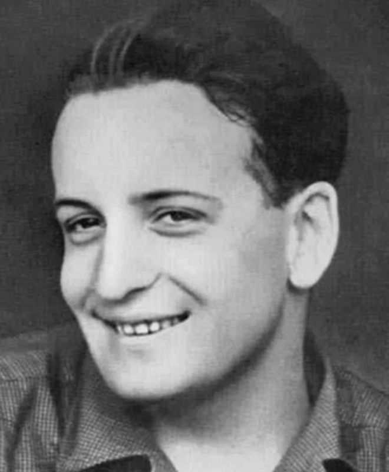
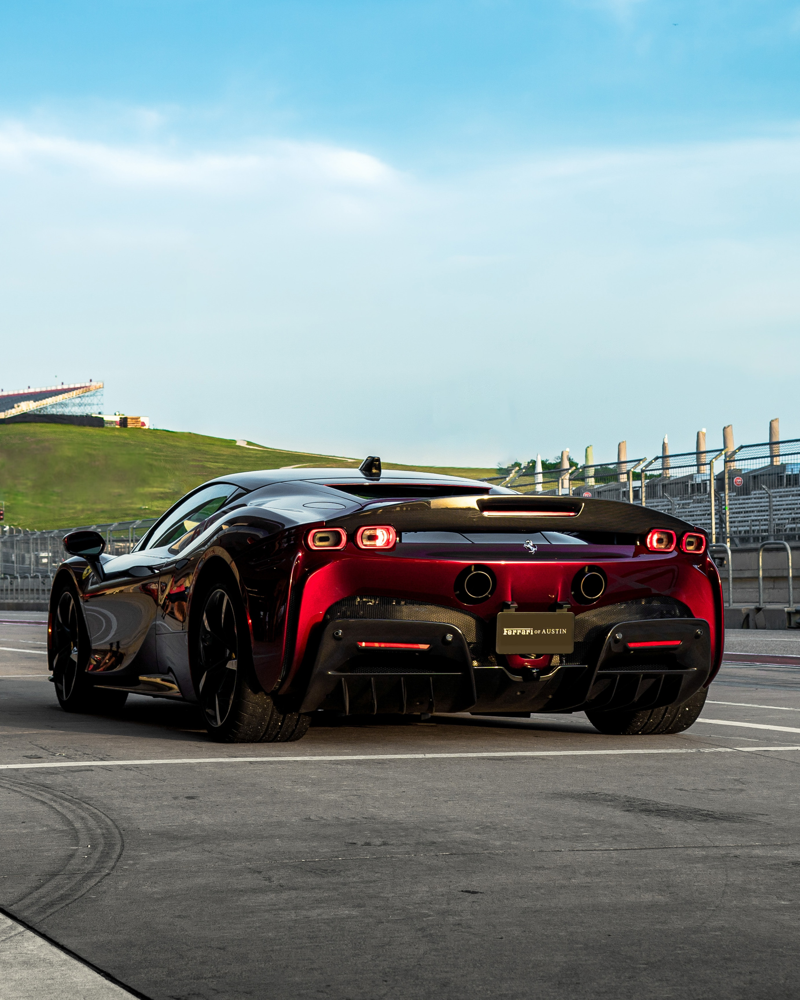

Sobre Enzo Ferrari
Enzo Anselmo Ferrari, nacido el 20 de febrero de 1898 en Módena, Italia, fue un apasionado amante de los automóviles y un visionario en el mundo del automovilismo. Desde joven, su obsesión por los motores lo llevó a estudiar ingeniería mecánica y a participar en carreras de autos. Fundó la Scuderia Ferrari en 1929, un equipo de carreras que se convertiría en la base de lo que hoy es la icónica marca de automóviles Ferrari.
Enzo Ferrari fue conocido por su dedicación implacable a la excelencia en el diseño y rendimiento de sus autos, y su búsqueda por la perfección lo llevó a crear algunos de los automóviles más legendarios y codiciados del mundo. Sus coches deportivos rápidamente se convirtieron en símbolos de estatus y velocidad.
Además de su éxito como diseñador y fabricante de automóviles, Enzo también fue un talentoso piloto de carreras en sus primeros años. Aunque un accidente lo llevó a retirarse como piloto, su pasión por las carreras nunca desapareció y su equipo, la Scuderia Ferrari, ha seguido compitiendo en la Fórmula 1 hasta la actualidad, siendo uno de los equipos más exitosos y emblemáticos de la historia.
Enzo Ferrari falleció el 14 de agosto de 1988, pero su legado perdura en cada automóvil Ferrari que lleva su nombre. Su visión y pasión por los autos deportivos han dejado una huella indeleble en la industria automotriz y continúan inspirando a entusiastas de los automóviles en todo el mundo."

El famoso logo de Ferrari, el "Cavallino Rampante", inspirado en el emblema de un piloto de la Primera Guerra Mundial.

Enzo Ferrari en su juventud, mostrando su pasión por los autos desde temprana edad.

Uno de los modelos más exclusivos de Ferrari, LaFerrari, con un diseño impresionante y un rendimiento excepcional.

La fábrica de Ferrari, lugar donde nacen los legendarios autos deportivos.

El Ferrari 488 Pista, uno de los automóviles más rápidos y emocionantes de la marca.